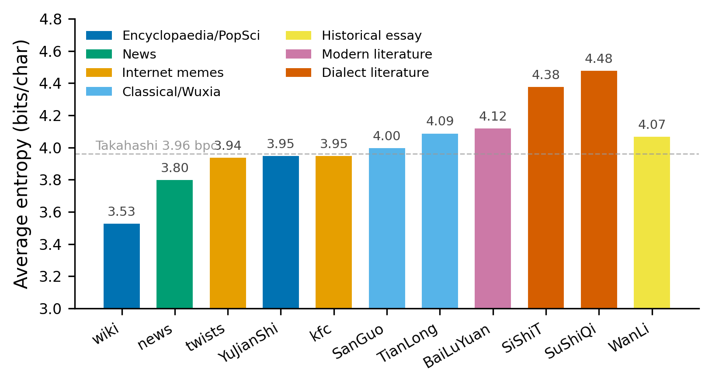
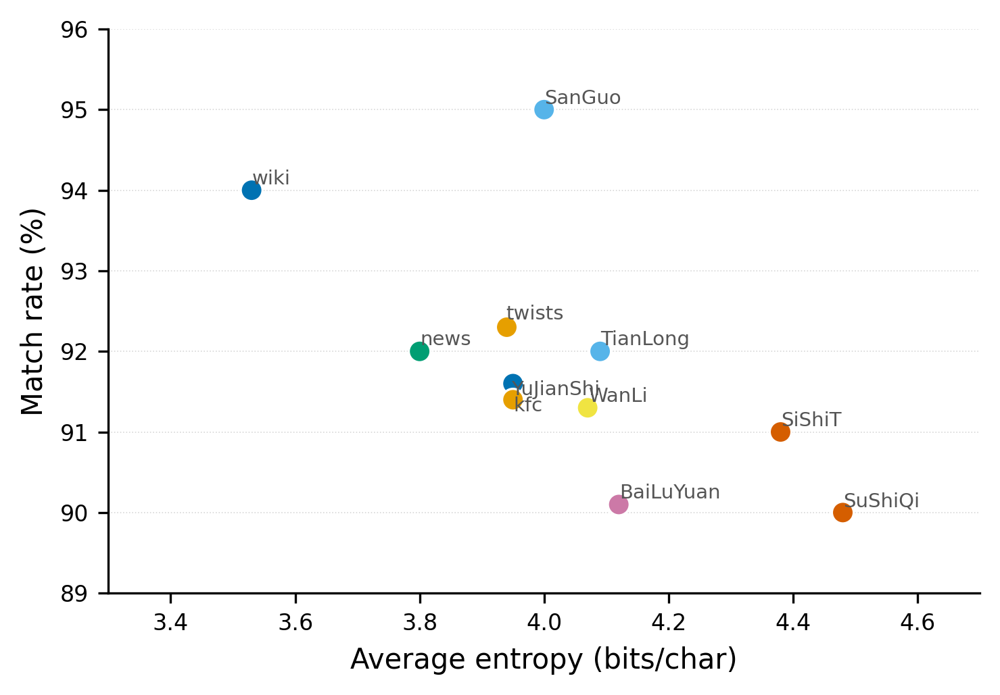
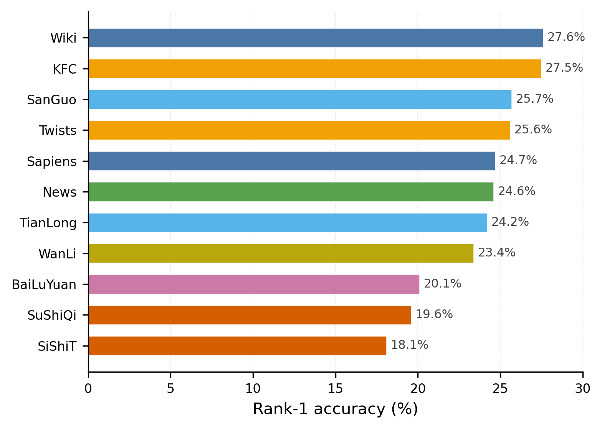
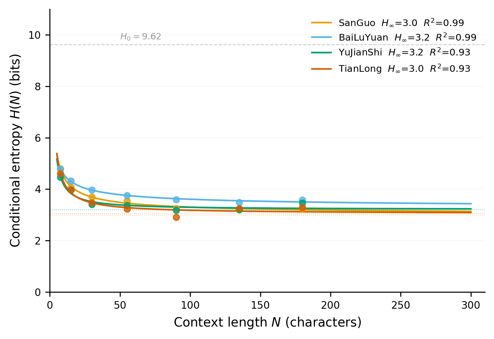

I Tried Shannon’s Guessing Game on Chinese Texts
Wikipedia, dialect fiction, wuxia, and KFC Thursday memes through the same tiny next-token predictor.
Project repo: github.com/Chi-Shan0707/Shannon-Chinese-Prediction/
When the model saw “因为疯狂”, it wanted to say “星期四” immediately. Rank 1. When it saw “肯德基疯狂”, same story: “星期四” was still right there. But when the setup became “V我50吃一顿...”, the word “肯德基” disappeared from the top guesses.
The phrase was easy. The joke was not.
Shannon’s entropy experiment has a pleasingly physical shape: someone guesses the next letter, gets it wrong, guesses again, and the text gives up its structure one mistake at a time. Chinese breaks the neatness of that game. What is the next symbol: a character, a word, an idiom, a name, a meme phrase, or whatever strange shard the tokenizer has made?
So the human guesser became Qwen3-0.6B, a small local model asked to guess Chinese one token at a time.
Stop Asking for One Entropy Number
“The entropy of Chinese” is too blunt a target. The sharper question is local: where does the model suddenly know what comes next?
Qwen3-0.6B is a very particular measuring stick. At every position, it exposes whether its expectations are narrow or scattered. Obvious continuations collapse onto a few tokens. Dialect, literary phrasing, local voice, and punchlines make the distribution fan out.
That turns the model into a texture probe: a nervous reader whose hesitations are visible.
The vague readerly hunch became inspectable: confidence spikes, hesitation points, and phrases that made the distribution scatter.
The Guessing Game, Automated
Each text is read one tiny step at a time. At each step there are two questions: is the real continuation somewhere among the model’s guesses, and how spread-out are those guesses?
The script checks the model’s top-1000 next-token candidates. If one candidate is a prefix of the real continuation, it counts as a hit and the script advances by that token length. If none matches, it records a miss and moves forward by one character.
The tracked number is the entropy of the model’s next-token distribution:
\[H(q)=-\sum_t q(t)\log q(t).\]
The code uses natural logarithms, so the unit is nats per prediction step. These are not bits per character. They are a relative scale inside this setup: one text against another, same model, same guessing game.
The Corpus Was Deliberately Unfair
Wikipedia, news, classical fiction, wuxia, modern literature, dialect fiction, internet twists, and KFC Thursday memes all went through the same tiny predictor. It was a stress test, not a balanced corpus.
| What stood out | Text | Why it mattered |
|---|---|---|
| Easiest ride | Wikipedia, news | definition-like prose, named entities, reporting formulas |
| Odd corner | Romance of the Three Kingdoms | highest top-1000 match rate, but not the lowest entropy |
| Clean meme split | KFC Thursday memes | fixed phrase is easy; punchline frame is harder |
| Hardest ride | Four Generations under One Roof, Marvelous Tales of the Marketplace | dialect, spoken rhythm, local voice |
Wikipedia Glides; Dialect Fiction Snags

No shock here: Wikipedia and news are paved roads for a language model. Definitions, named entities, time-place relations, topic labels, reporting formulas. Dialect fiction is gravel. It carries local voice, spoken rhythm, and phrasings the model has not seen in the same industrial quantities.
The curve gives a number to a readerly hunch: “方言味儿” and “口语感” are not just vibes here; they become a higher-entropy prediction environment.
Three Kingdoms Lands in the Weird Corner

Romance of the Three Kingdoms has the highest top-1000 match rate here: 95.0%. But it does not have the lowest mean entropy. That was the result I kept coming back to.
Here is the distinction: formula can put the right continuation nearby without making it inevitable. “却说”, “话说”, “玄德曰”, battle descriptions, titles, and repeated narrative machinery all help the model find the neighborhood. They do not necessarily force probability mass onto one token the way Wikipedia often does.
So “the model can find it somewhere” is not the same as “the model is sure.”

The Model Knows “Crazy Thursday”—But Not Always the Joke
If you have spent any time on Chinese internet, you know the move: a normal or dramatic setup suddenly turns into “today is Crazy Thursday, V me 50.” So I went straight for the trapdoor.
| Prefix | Target | Rank |
|---|---|---|
| ...因为疯狂 | 星期四 | 1 |
| ...肯德基疯狂 | 星期四 | 2 |
| ...今天是疯狂 | 星期四 | 1 |
| ...能给我转50吃 | 肯德基 | 252 |
| ...V我50吃一顿 | 肯德基 | not found |
| ...缺五十块买 | 肯德基 | not found |
The model has “疯狂星期四” as a chunk. But “eat → KFC” is a different skill. “Eat” opens the whole food universe; landing on KFC means recognizing the meme’s social script, not just completing a collocation.
The meme test split predictability in two: memorized phrases on one side, recognized setup on the other. The model could recite the slogan before it could smell the joke.
More Context Helps—Until It Mostly Doesn’t
The more Shannon-like question is context: how much previous text actually helps? Four longer texts, a context window stretched from \(N=5\) to about \(N=200\), and a simple decay curve:
\[H(N)=H_\infty+aN^{-b}.\]

| Text | \(H_\infty\) | \(b\) | \(R^2\) | Reading |
|---|---|---|---|---|
| Romance of the Three Kingdoms | 3.00 | 0.681 | 0.99 | smooth decay, stable formulaic style |
| White Deer Plain | 3.22 | 0.541 | 0.99 | slower convergence, more literary variation |
| Sapiens | 3.21 | 1.035 | 0.93 | large gains from short context |
| Demi-Gods and Semi-Devils | 3.05 | 0.955 | 0.93 | approaches formulaic narrative after longer context |
The bend in the curve matters more than the fitted parameters. Early context is powerful: the first few dozen characters buy a lot, the next hundred much less. That flattening is the most Shannon-looking part of the whole experiment.
Token Entropy, Not Character Entropy
The numbers here are model-side token entropies. They measure how scattered Qwen3-0.6B’s next-token distribution is at each step.
- Unit: nats per prediction step, not bits per character.
- Predictor: one small model, not the true distribution of Chinese.
- Granularity: token matching, not character-level guessing.
A character-level version would need to fold token probabilities back into character probabilities:
\[P(c\mid C)=\sum_{t:\operatorname{prefix}(t)=c} P(t\mid C).\]
That is the route to cleaner comparison with older bits-per-character work. Here, the token-level version is doing a different job: finding the strange shapes first.
Where the Linguistics Sneaks In
The questions that survived had more to do with language than with scores:
- Which kinds of Chinese make the model hesitate?
- Does formulaic writing make the model confident, or just put the right answer somewhere nearby?
- Does the model know the phrase, or does it know the joke?
- How much context do you need before more text stops helping much?
A single entropy number would flatten the best part. Predictability has several shapes. A text can be formulaic enough to put the right continuation nearby while still leaving the model unsure about the distribution. Another text can be ordinary in topic but jagged in voice. A meme can be locally obvious and globally slippery.
Different Chinese texts become predictable in different ways. Even a tiny local model can point to the hiding places.
The Numbers
| Category | Source | Steps | Match rate | Rank-1 | Mean H |
|---|---|---|---|---|---|
| wiki | Wikipedia samples | 4,228 | 94.0% | 27.6% | 3.53 |
| news | news articles | 2,693 | 92.0% | 24.6% | 3.80 |
| internet_twists | internet twists / anti-jokes | 1,323 | 92.3% | 25.6% | 3.94 |
| human_jianshi | Sapiens, Chinese edition | 6,450 | 91.6% | 24.7% | 3.95 |
| kfc | KFC Thursday memes | 1,497 | 91.4% | 27.5% | 3.95 |
| sanguo | Romance of the Three Kingdoms | 7,818 | 95.0% | 25.7% | 4.00 |
| wanli | 1587, A Year of No Significance | 7,590 | 91.3% | 23.4% | 4.07 |
| tianlongbabu | Demi-Gods and Semi-Devils | 7,425 | 92.0% | 24.2% | 4.09 |
| bailuyuan | White Deer Plain | 7,399 | 90.1% | 20.1% | 4.12 |
| sishitongtang | Four Generations under One Roof | 6,188 | 91.0% | 18.1% | 4.38 |
| sushi_qiren | Marvelous Tales of the Marketplace | 6,885 | 90.0% | 19.6% | 4.48 |
Mean H is next-token distribution entropy in nats/step. Lower means the model’s distribution is more concentrated.